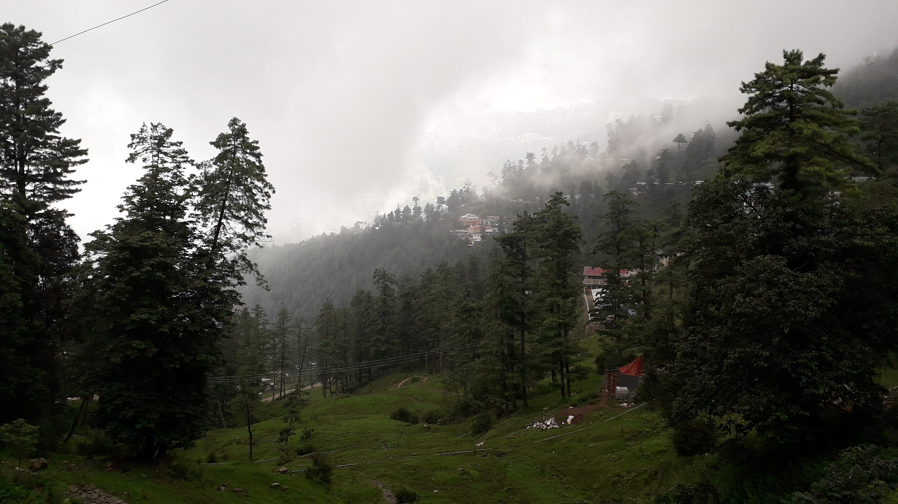
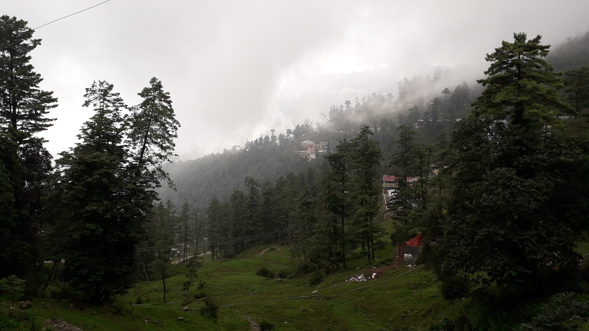

Galyat: MOUNTAINER'S HEAVEN IN PAKISTAN
The Galyat mountains in Pakistan are really impressive! With some peaks reaching over 7,300 feet high
 

Galyat, Pakistan
Galyat is a beautiful place in Pakistan with tall mountains and a valley. It's really high up, more than 7,300 feet! The valley has a blue river, tasty fruits, cool historical places, and nice weather that brings in tourists from all over the world.
Galyat Mountains in Pakistan are super tall and have a valley with a beautiful blue river. People love to visit because of the high peaks and the pretty scenery.
People love to visit Galyat for tourism and trekking, and it's like a door to some really tall mountains that lots of adventurers from other countries want to explore.